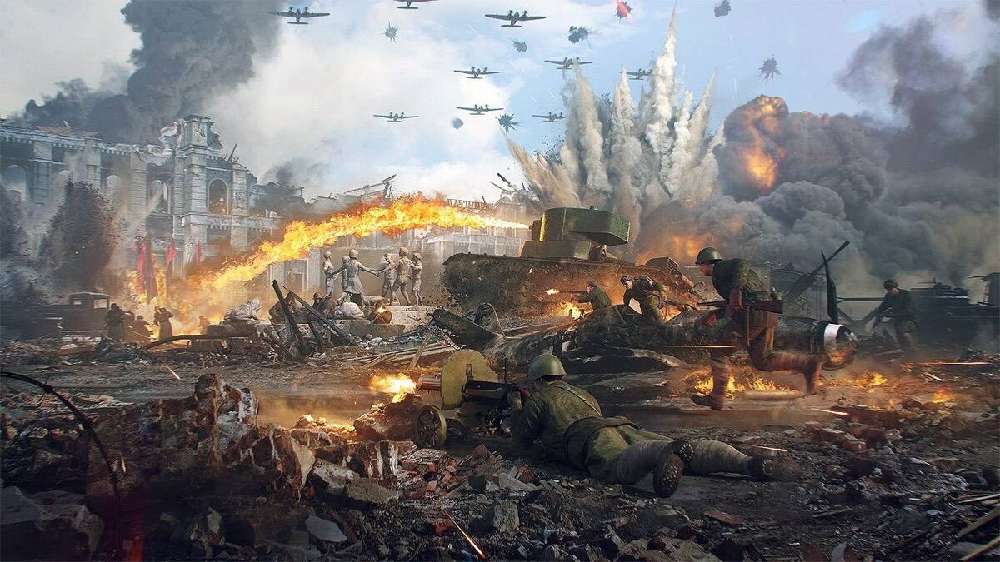

Ставшая одной из наиболее кровопролитных битв Второй мировой войны, Сталинградская битва (или Битва за Сталинград) развернулась с 17 июля 1942 года по 2 февраля 1943 года. Расположенный на берегу Волги город Сталинград (ныне Волгоград) стал критическим стратегическим пунктом для обеих сторон конфликта.
Начало битвы отмечено масштабной наступательной операцией немецких войск, которые стремились захватить город и перерезать коммуникационные пути вдоль Волги. Сопротивление советских войск было свирепым, и жестокие бои развернулись на улицах, в домах и на окружающих городских пространствах.
Битва переросла в оборонительные действия Красной Армии, которая оказала решающее сопротивление наступлению гитлеровской армии. Советские солдаты, героически защищая каждый квадратный метр территории, вступили в атаку под руководством генерала Жукова, что привело к окружению и крупнейшей капитуляции немецких войск в истории.